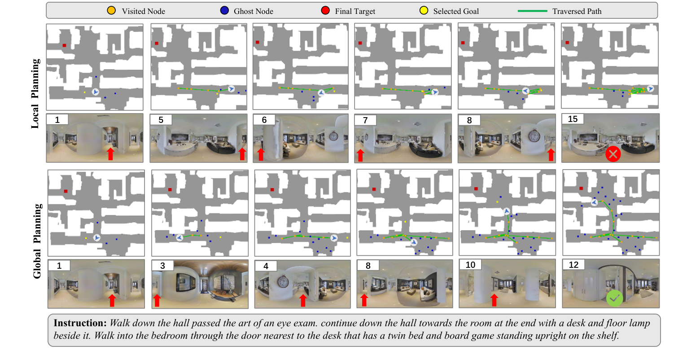
01 · ETPNav Fig. 5
PDF p12 · 优先级 2 · VLN-CE
Habitat：是
同一地图坐标系中逐步显示路线，下方对应 RGB 观测；适合解释跨区域重规划。
区别：对比局部与全局规划，不是目标未检出导致的区域信念更新。

PDF p12 · 优先级 2 · VLN-CE
Habitat：是
同一地图坐标系中逐步显示路线，下方对应 RGB 观测；适合解释跨区域重规划。
区别：对比局部与全局规划，不是目标未检出导致的区域信念更新。
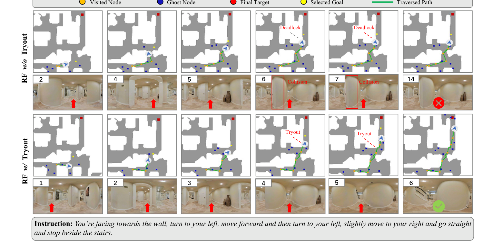
PDF p12 · 优先级 2 · VLN-CE
Habitat：是
成对时间序列展示有无 Tryout 的行为差别，恢复动作能直接看见。
区别：这是障碍规避；不要将其直接解释为语义目标验证失败。
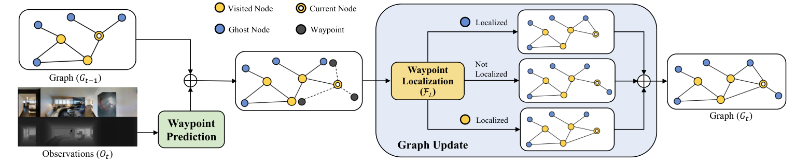
PDF p4 · 优先级 3 · VLN-CE
Habitat：是
新增、已访问、候选节点采用稳定图例，适合借鉴新增节点的高亮。
区别：更新的是导航路点图，不是物体实例场景图。
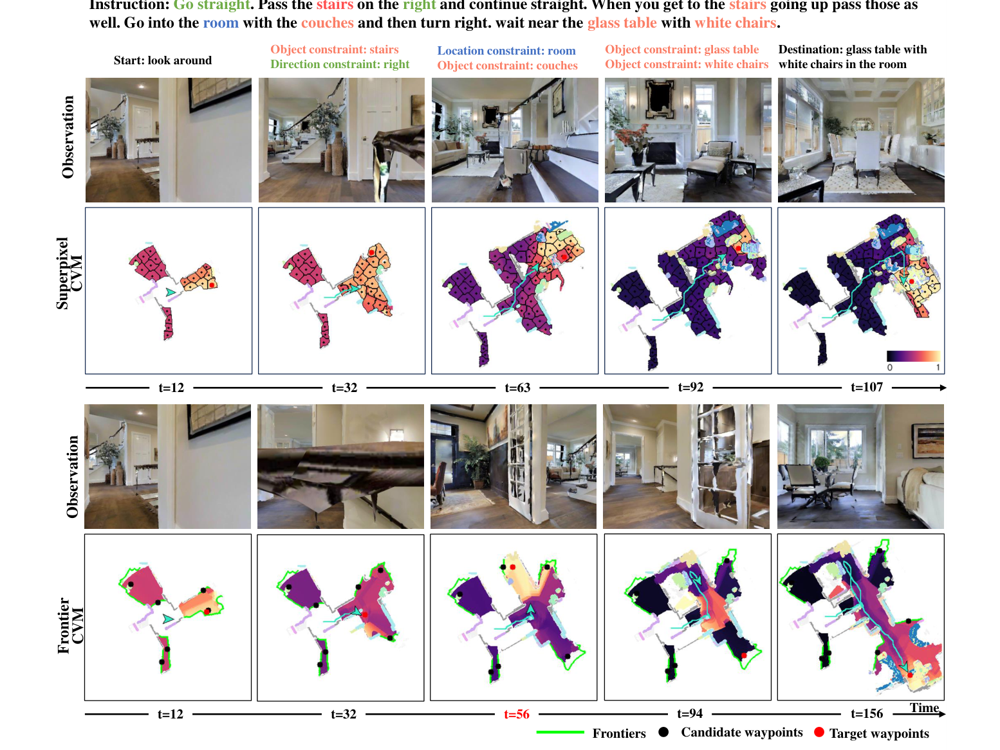
PDF p11 · 优先级 1 · VLN-CE
Habitat：是
观察图与地图上下对齐；少量关键帧就能交代“看到什么、随后往哪里走”。
区别：原图含方法对比且信息很多；Fig.8 可保留单条过程的三个关键时刻。
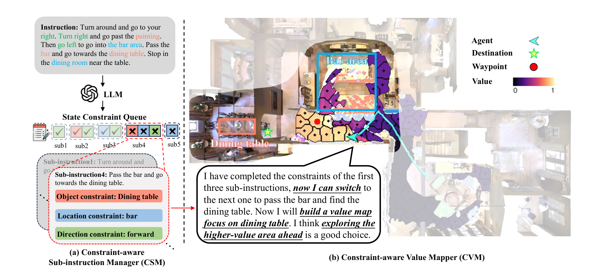
PDF p2 · 优先级 2 · VLN-CE
Habitat：是
房间底图、目标星号、路点和价值层共用空间参照，适合主图布局。
区别：子指令推进不是同一目标的失败恢复；任务状态含义需改为本项目定义。
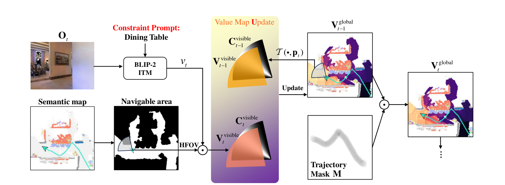
PDF p5 · 优先级 2 · VLN-CE
Habitat：是
视锥、当前观测和更新前后地图形成直接因果链。
区别：价值融合不是你的新增覆盖去重规则，不能直接借用其公式。
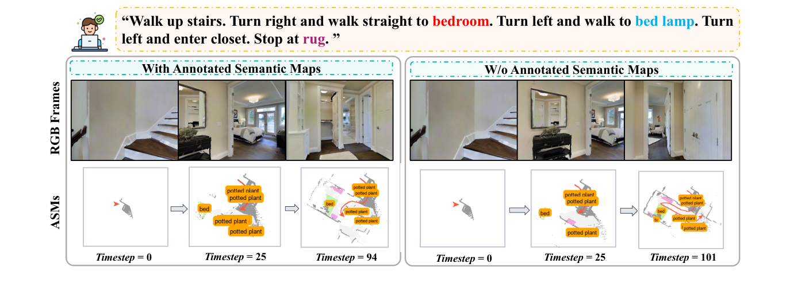
PDF p14 · 优先级 2 · VLN-CE
Habitat：是
两行对应同一步的观测和地图，关键物体标签有助于阅读。
区别：原图比较有无 ASM；Fig.8 应换成单次恢复过程。
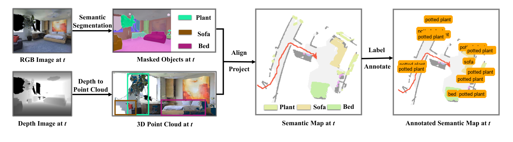
PDF p4 · 优先级 2 · VLN-CE
Habitat：是
图像、点云、投影平面与文本标签逐层对应，适合说明新观测如何落图。
区别：标注语义地图不等于新实例的确认和插入。
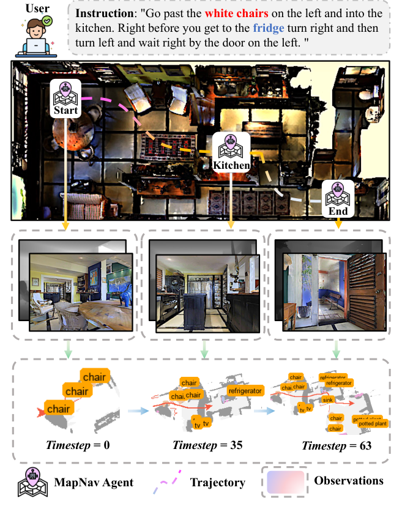
PDF p1 · 优先级 2 · VLN-CE
Habitat：是
同一位置在 RGB、俯视地图和 ASM 中保持对应，可减少纯文字解释。
区别：本包使用 v5；小尺寸下标签过多，需要只保留相关对象。
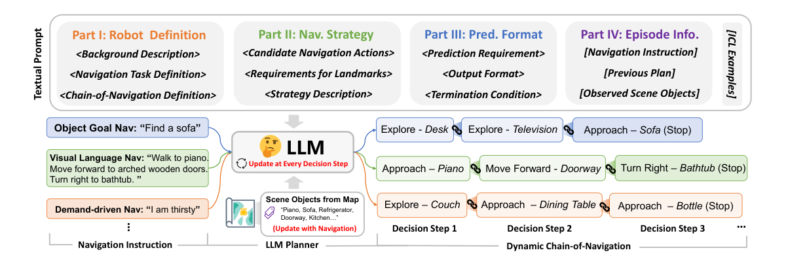
PDF p4 · 优先级 3 · VLN-CE / ObjectNav / DDN
Habitat：是（部分任务）
任务输入、当前动作及下一轮更新有清晰连接，可参考反馈箭头。
区别：这是通用导航步骤规划；整体文字偏多，不宜作为 Fig.8 主构图。
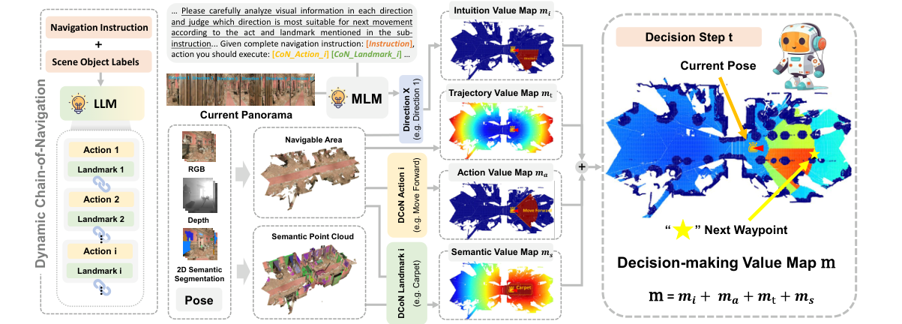
PDF p5 · 优先级 2 · VLN-CE / ObjectNav / DDN
Habitat：是（部分任务）
多个地图共享坐标和视觉语法，适合解释不同证据如何共同影响搜索。
区别：原方法合成多种价值图，不是你的覆盖与区域信念机制。
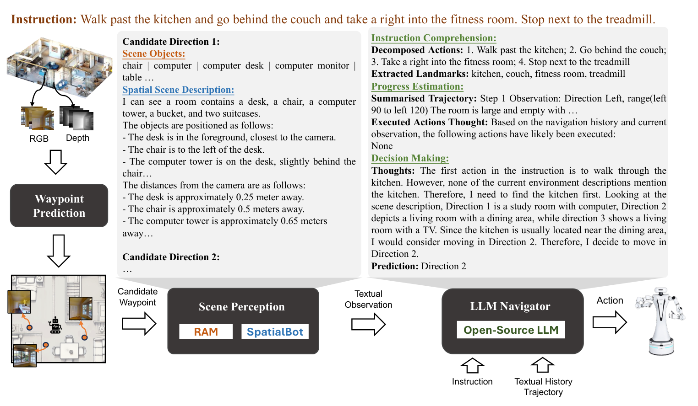
PDF p4 · 优先级 3 · VLN-CE
Habitat：是
观测旁边摆候选方向，再连接决策，适合局部重试的候选说明。
区别：长段推理文字占空间；建议只取候选与图像的对应方式。
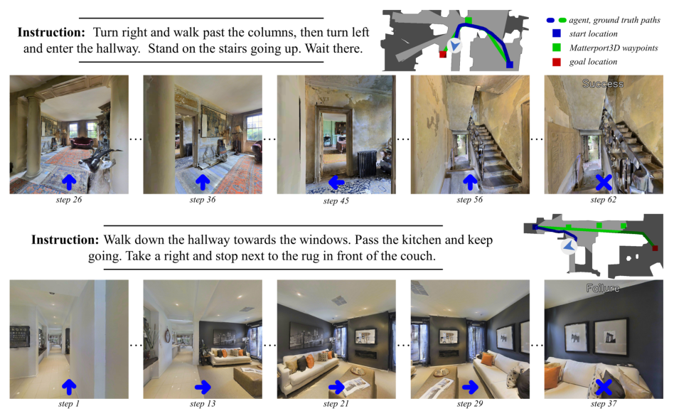
PDF p14 · 优先级 2 · VLN-CE 基准
Habitat：是
在少量帧中保留连续环境中的移动过程，适合紧凑实验示例。
区别：它展示指令执行，不单独解释语义恢复和地图更新。
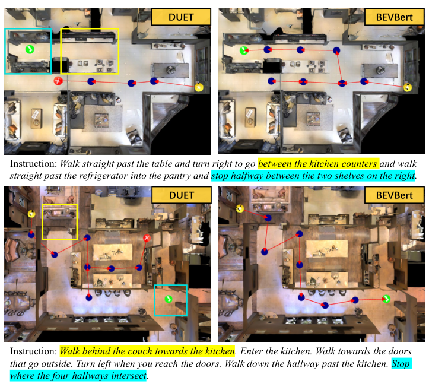
PDF p7 · 优先级 2 · 离散 VLN；另有 CE 实现
Habitat：混合
地图上用统一的起点、目标和错误终点符号，空间关系容易比较。
区别：所选图属于离散 R2R；官方 CE 实现存在不代表这张图就是 Habitat 结果。
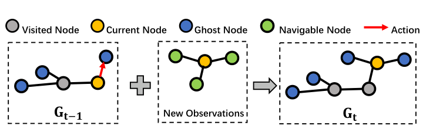
PDF p5 · 优先级 3 · 离散 VLN；另有 CE 实现
Habitat：混合
旧节点保持样式，只标明新增节点及访问状态。
区别：拓扑路点更新，不是物体确认；只参考视觉编码。
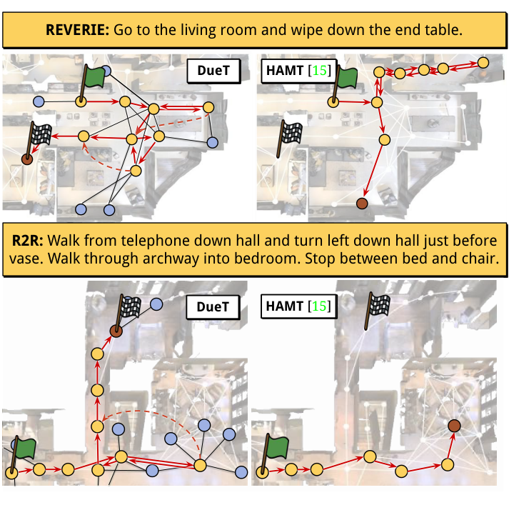
PDF p8 · 优先级 2 · 离散 VLN
Habitat：所选实验非 Habitat
在同一底图上标出不同路径，虚线表达全局连接，适合解释恢复跨度。
区别：离散 VLN 的全局图动作，不代表可直接飞行的连续轨迹。
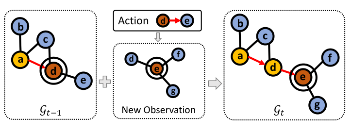
PDF p3 · 优先级 3 · 离散 VLN
Habitat：所选实验非 Habitat
三个连续小图固定旧节点布局，读者能立即找到新增部分。
区别：导航图的节点含义不同，移植时必须换成实例节点与确认条件。
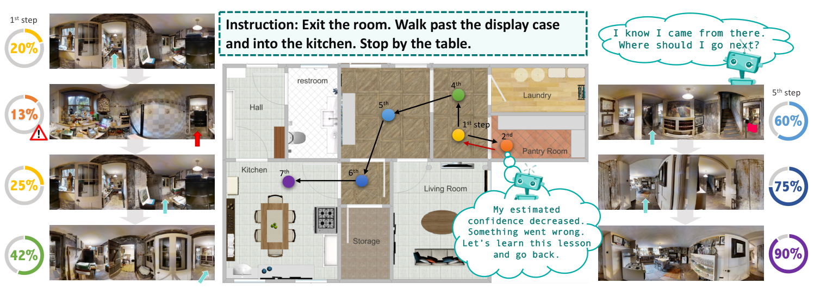
PDF p1 · 优先级 1 · 离散 VLN
Habitat：所选实验非 Habitat
中心地图负责空间主线，两侧观测展示关键转折，是很好的整体构图模板。
区别：非 Habitat 的离散 VLN；进度估计不等于你的目标存在信念。
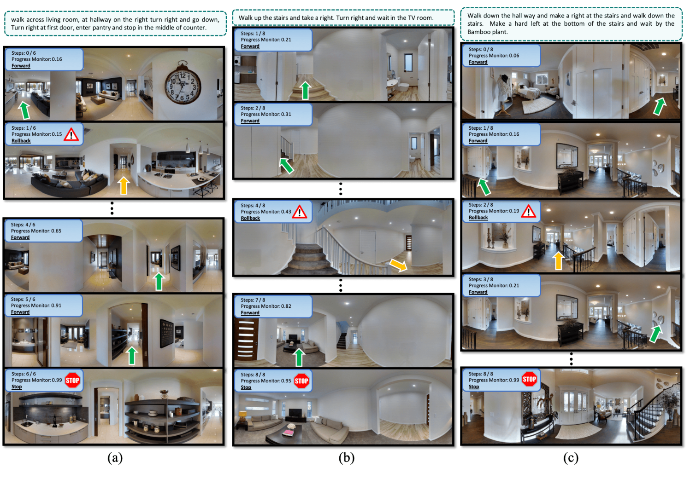
PDF p9 · 优先级 2 · 离散 VLN
Habitat：所选实验非 Habitat
方向箭头和回退标记标在实际图像上，便于表达局部换视角。
区别：原图有三个独立案例，不应把它们串成同一次任务；建议只借一种标记方式。
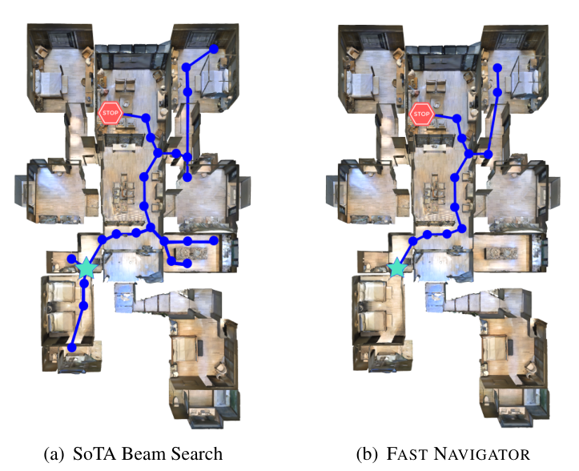
PDF p1 · 优先级 2 · 离散 VLN
Habitat：所选实验非 Habitat
对称对比两条路径、统一起终点标记，适合看路线叙事是否清楚。
区别：离散 R2R 搜索；原图不提供区域负证据更新。
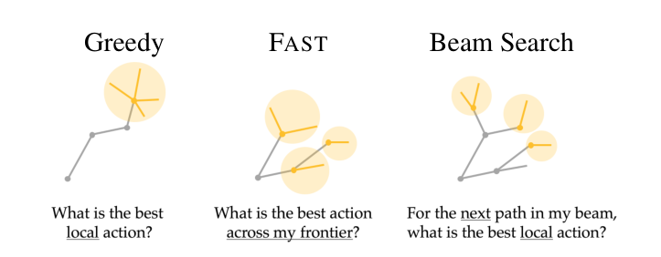
PDF p2 · 优先级 3 · 离散 VLN
Habitat：所选实验非 Habitat
用很少的节点和浅色搜索区域解释局部与全局搜索差别。
区别：是抽象搜索树，若单独使用仍缺少实际观测证据。
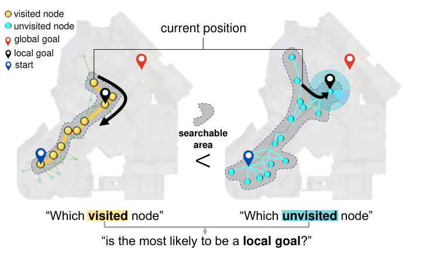
PDF p2 · 优先级 2 · VLN；扩展 ImageNav
Habitat：混合
地图中同时保留已访问和未访问候选，可以借鉴换区域后的候选表达。
区别：这是 VLN 的局部目标搜索概念，不是单次未检出即换区域。
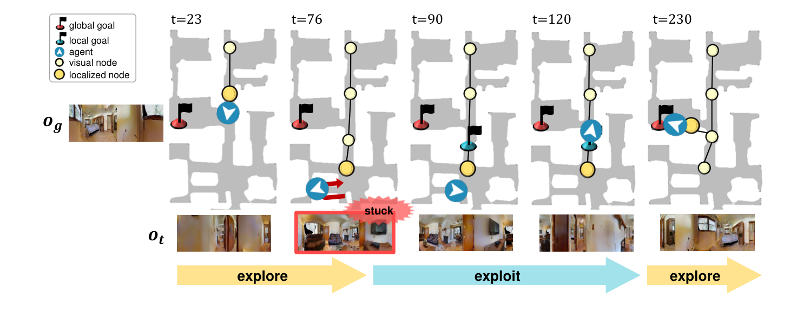
PDF p19 · 优先级 2 · VLN；扩展 ImageNav
Habitat：混合
上排轨迹、下排观测、底部模式条，适合直接展示恢复发生的时间。
区别：这张图是 Habitat 的 ImageNav 扩展，不是语言指令实验；不能混称为 VLN-CE 结果。
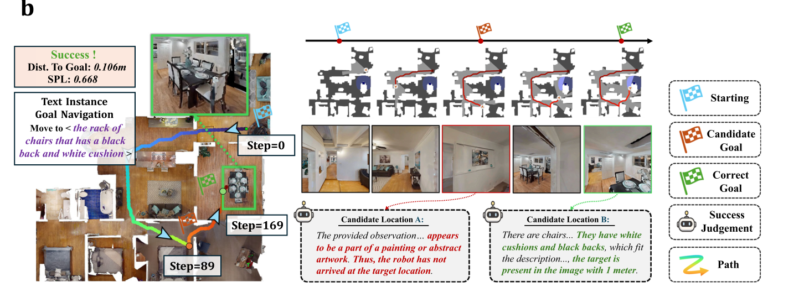
PDF p5 · 优先级 1 · ObjectNav / 实例导航 / VLN-CE
Habitat：是
主地图、局部地图、RGB 和验证结果相互对应，最适合借鉴恢复过程的整体叙事。
区别：Fig.3b 为整图 b 子图；原任务为实例匹配，否定错误候选不等于你的区域覆盖负证据。
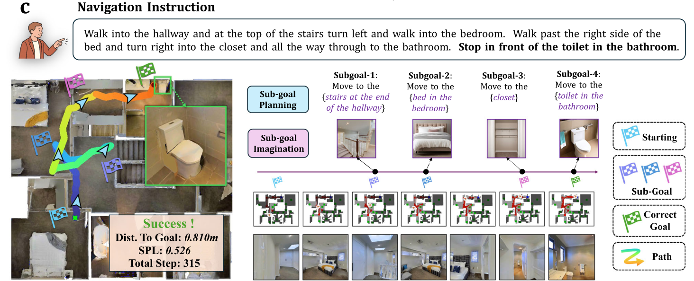
PDF p6 · 优先级 2 · ObjectNav / 实例导航 / VLN-CE
Habitat：是
俯视主场景与子目标关键帧并置，适合参考空间主图的布局。
区别：Fig.4c 是完整 c 子图；原图是子任务推进，不要用来替代同一任务的恢复。
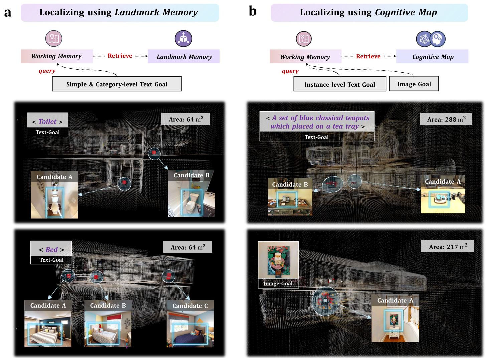
PDF p4 · 优先级 2 · ObjectNav / 实例导航 / VLN-CE
Habitat：是
场景中的候选位置连接到图像局部，读者可以比较候选而不丢失位置。
区别：整体黑色点云背景较重；可借对应关系，不必照搬底色。
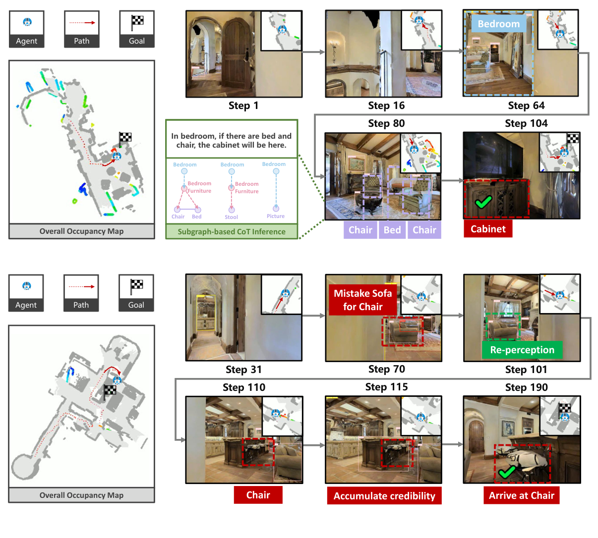
PDF p9 · 优先级 1 · ObjectNav
Habitat：是（另含 RoboTHOR）
上方案例呈现搜索，下方案例呈现误检纠正；推荐重点看下半部观测链。
区别：本包保留完整 Fig.6；它的再感知处理误检，你的 Fig.8 还需表达未检出和覆盖去重。
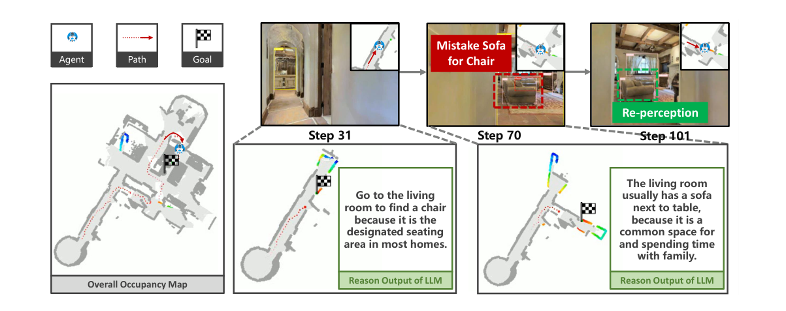
PDF p16 · 优先级 2 · ObjectNav
Habitat：是（另含 RoboTHOR）
候选分数附着在地图位置，决策理由紧挨对应地图。
区别：前沿概率不是区域存在信念；理由文字应压缩为触发条件。
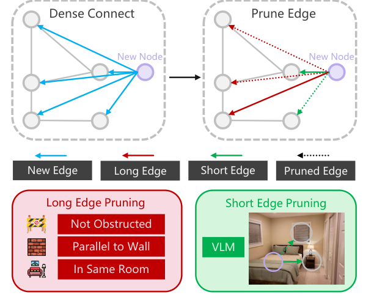
PDF p4 · 优先级 2 · ObjectNav
Habitat：是（另含 RoboTHOR）
新节点单独着色，再展示连接和裁剪，适合新增物体节点的局部设计。
区别：原文是图边生成与裁剪，不对应你执行后才插入实例的时序。
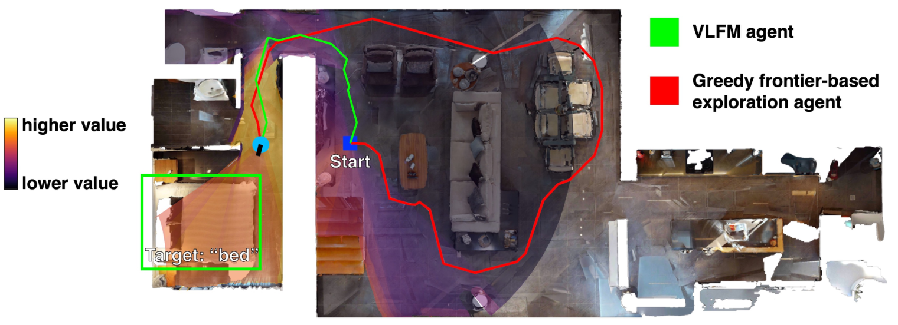
PDF p1 · 优先级 1 · ObjectNav
Habitat：是
一张场景图同时承载搜索路径和语义层，整体空间关系最直观。
区别：只是视觉主场景参考，原图不解释负证据去重。
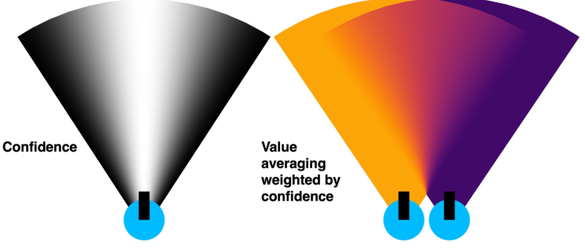
PDF p3 · 优先级 2 · ObjectNav
Habitat：是
两个相机视野保留清晰重叠区，适合设计已看区域与新增覆盖的区别。
区别：原文为视角置信度加权融合；你的重复覆盖不重复计入负证据，规则不同。
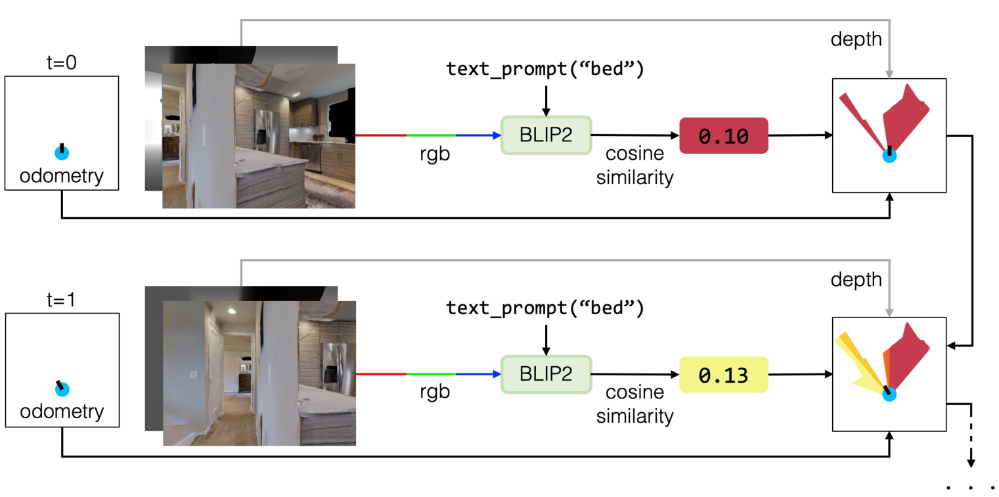
PDF p4 · 优先级 2 · ObjectNav
Habitat：是
相同布局的两行展示 RGB、深度、视野和地图更新，因果关系清晰。
区别：语义价值投影和你的区域置信度公式不同。
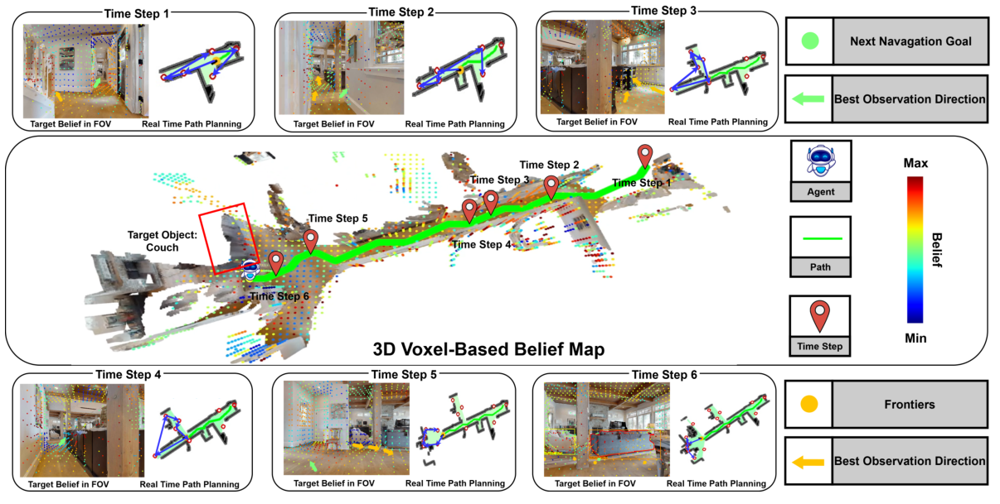
PDF p2 · 优先级 1 · ObjectNav
Habitat：是
主图给出空间上下文，关键观测环绕布置，适合 Fig.8 整体视觉结构。
区别：六个时刻对于单幅小图偏多，建议只保留未检出、换区域和成功三个时刻。
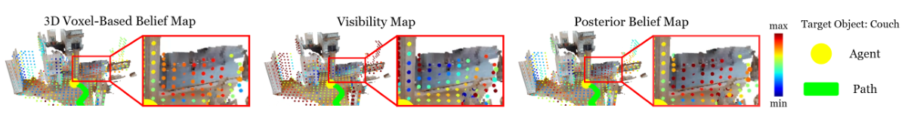
PDF p9 · 优先级 2 · ObjectNav
Habitat：是
三张一致视角的地图可以把信念变化与空间位置对应。
区别：与 Fig.12 表达同一类机制，不应当作独立研究证据；本图较扁，宜优先看 Fig.12。
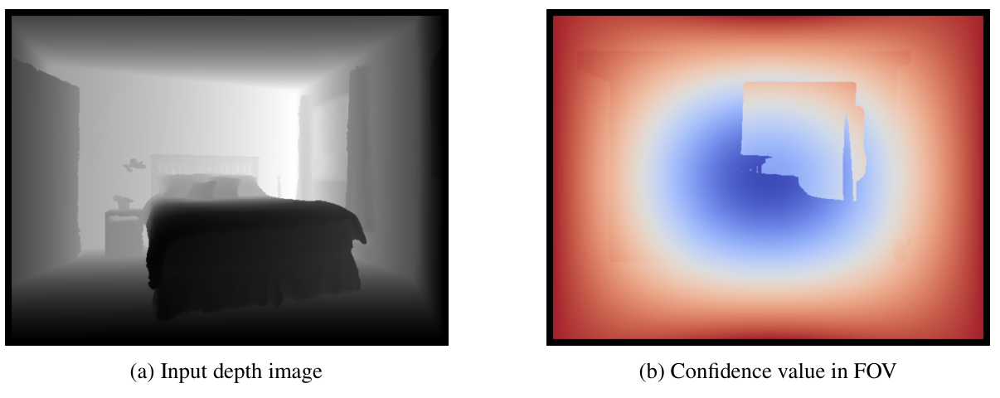
PDF p16 · 优先级 2 · ObjectNav
Habitat：是
深度图和置信图配对，适合参考“未看到”背后的可见性说明。
区别：像素/体素可见性置信不同于你的离散区域样本覆盖；不能迁移颜色数值。
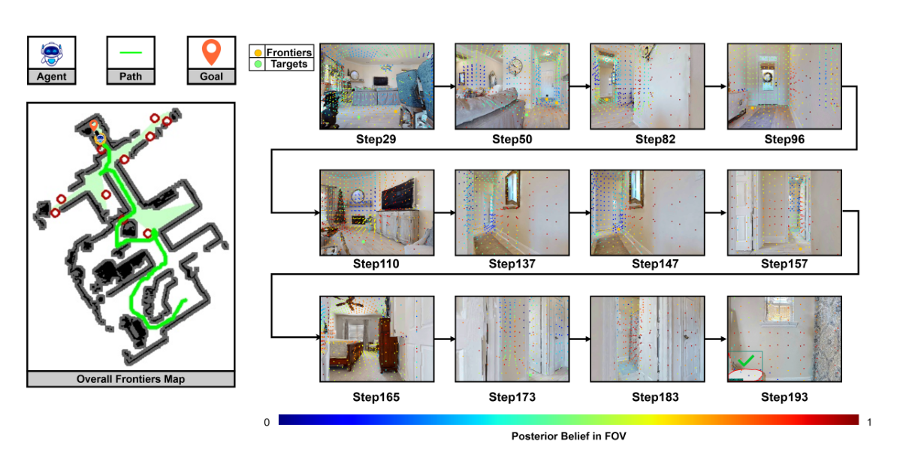
PDF p19 · 优先级 2 · ObjectNav
Habitat：是
地图轨迹、RGB 时间序列和连续色条共同讲清搜索过程。
区别：图中后验有自己的算法定义；仅借鉴时空对齐形式。
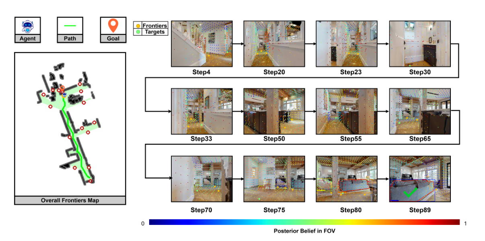
PDF p19 · 优先级 3 · ObjectNav
Habitat：是
作为不同场景纵横比例下的备用排版，可以比较哪些信息适合缩小。
区别：与 Fig.9 是同论文的另一个案例，不增加方法覆盖范围。
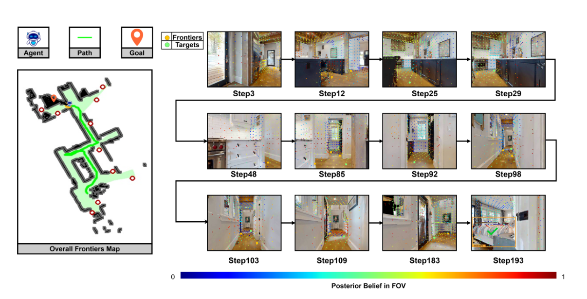
PDF p20 · 优先级 3 · ObjectNav
Habitat：是
多时刻局部图通过统一路径图定位，适合跨房间恢复的备选构图。
区别：不宜把所有关键帧都塞入 Fig.8。
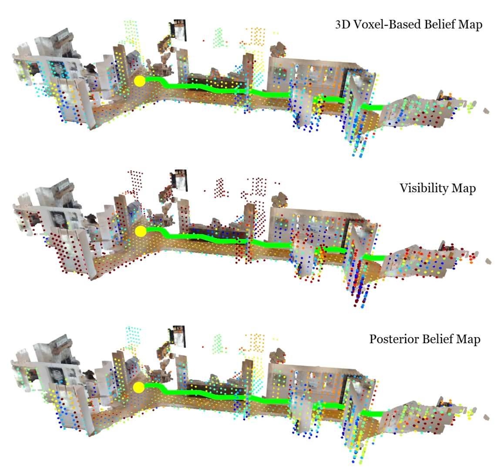
PDF p20 · 优先级 1 · ObjectNav
Habitat：是
相同相机和场景下展示先验、可见性、后验，适合你最难画清的空间证据变化。
区别：原方法是体素贝叶斯信念；你的方法是区域有界置信度，应保留自己的去重规则。
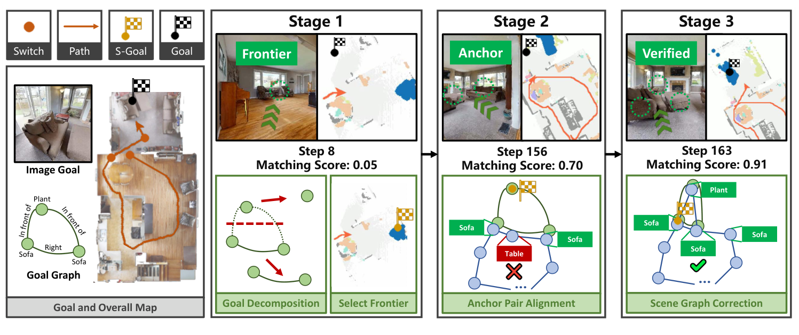
PDF p7 · 优先级 1 · ObjectNav / ImageNav / TextNav
Habitat：是（另含 RoboTHOR）
每列同时包含局部地图、目标信息和图结构，阶段转换非常清楚。
区别：原文按图匹配状态转换，不能照搬为你的局部预算触发恢复。
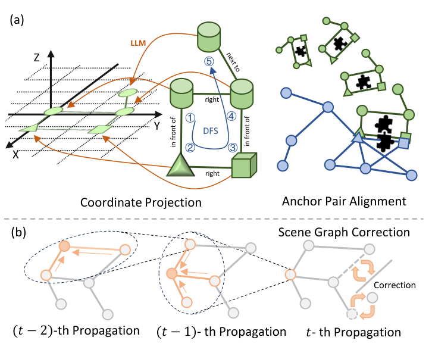
PDF p5 · 优先级 2 · ObjectNav / ImageNav / TextNav
Habitat：是（另含 RoboTHOR）
配对锚点、目标投影、图结构修正采用统一节点颜色。
区别：物体图匹配纠正与确认新实例不是同一个操作。
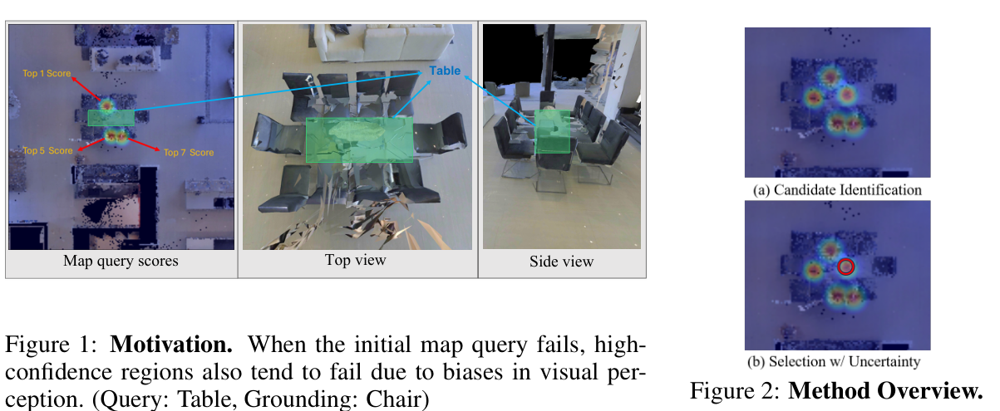
PDF p2 · 优先级 1 · 预建地图上的 ObjectNav
Habitat：是（VLMaps 分支）
将初次检索、重复失败的候选及重规划依据放在一起，与你预建地图场景很接近。
区别：保留相邻 Fig.1–2 与短图注作为一个参考单元；属于两个图号，不应当成单幅算法图。
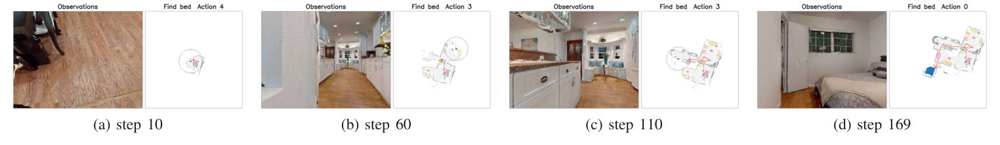
PDF p5 · 优先级 2 · ObjectNav
Habitat：是
观测与小地图配对，适合简洁展示前沿切换和最终发现目标。
区别：原图地图较小，应放大关键帧，且不包含实例图更新。
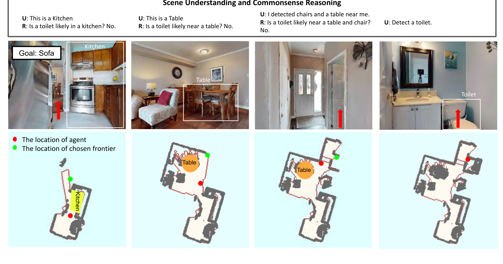
PDF p14 · 优先级 2 · ObjectNav
Habitat：未单独核实
RGB 观测与地图上的下一搜索方向上下对齐，常识线索能落在真实位置。
区别：原图依赖房间/物体共现推理；本轮未单独确认该示例的仿真器。
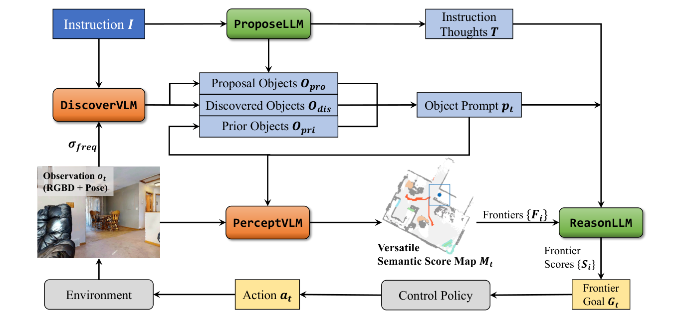
PDF p3 · 优先级 3 · 开放词汇 ObjectNav
Habitat：是
语义地图位于闭环中央，能够参考观测与下一轮探索的连接方式。
区别：系统框图的模块较多，适合作为流程补充而非 Fig.8 的主视觉。
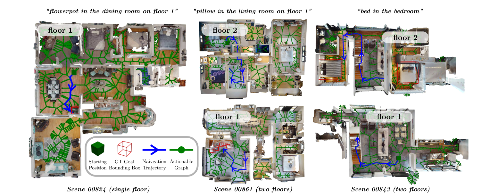
PDF p9 · 优先级 1 · 语言目标导航 / 分层建图
Habitat：是（另含真实机器人）
大场景保留空间结构，目标和终点局部图从场景中直接引出，适合主地图。
区别：定位和层次查询不代表失败恢复；多楼层对 Fig.8 若无必要可省略。
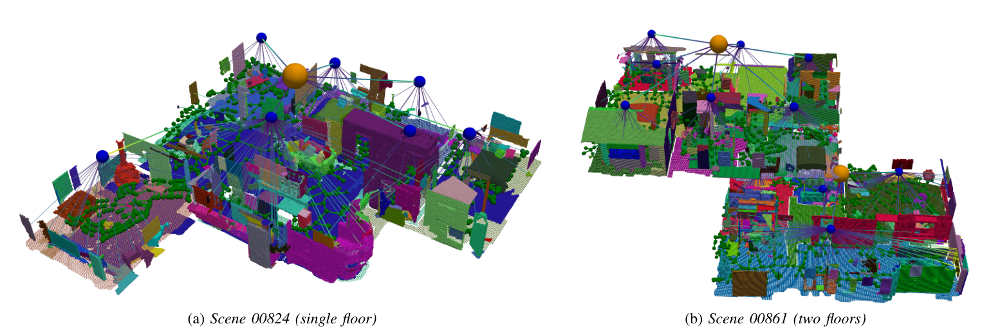
PDF p8 · 优先级 2 · 语言目标导航 / 分层建图
Habitat：是（另含真实机器人）
可参考如何将抽象图节点附着在可辨认的空间位置。
区别：节点很多；用于 Fig.8 更新示意时应只取相关房间和目标实例。
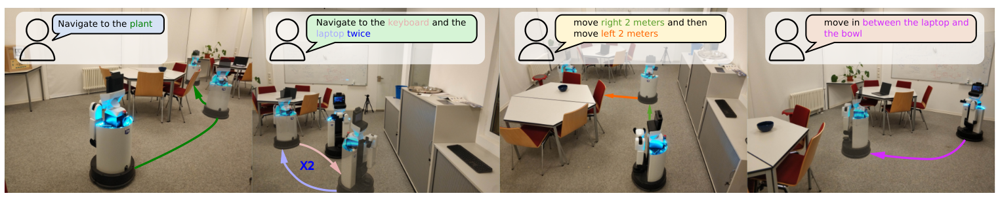
PDF p2 · 优先级 2 · 语言空间目标导航
Habitat：是（部分实验）
把语言中的左右、前后等关系画在真实目标附近。
区别：多步骤空间目标导航不是未检出恢复。
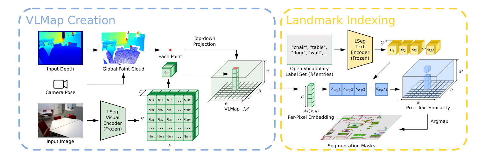
PDF p3 · 优先级 3 · 语言空间目标导航
Habitat：是（部分实验）
图像、深度和地图之间的连接清晰，可参考观测到地图的流程组织。
区别：特征地图不是物体实例图；无需把完整建图系统搬入 Fig.8。
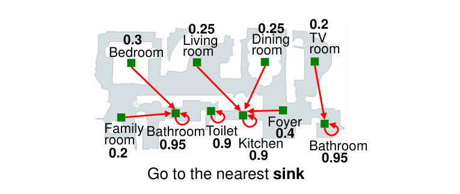
PDF p7 · 优先级 2 · ObjectNav / 巡检
Habitat：混合
每个房间标概率，用局部循环箭头表示当前房间搜索，适合恢复区域选择。
区别：这是全局搜索策略示意；本图不应被称为 Habitat 运行截图。
PDF p14 · 优先级 2 · ObjectNav / 巡检
Habitat：混合
多次规划步骤保持相同房间顺序，能够比较负观测后概率重分配。
区别：该例为 Gazebo；曲线机制和你区域样本覆盖不同，且柱图不适合占据主视觉。
PDF p3 · 优先级 2 · 开放词汇建图 / 机器人规划
Habitat：所选图非 Habitat 实验
从 RGB 分割到对象点云和图节点，连接方式适合实例融合部分。
区别：这是静态场景图构建，不是执行后确认新增实例的完整实现。
PDF p6 · 优先级 2 · 开放词汇建图 / 机器人规划
Habitat：所选图非 Habitat 实验
候选物体与现场图像直接对照，适合解释为什么还需要验证。
区别：所选示例是真实机器人；验证逻辑不是你任务的终止条件。
PDF p5 · 优先级 1 · 动态建图 / 移动操作
Habitat：所选图为真实场景
观测、场景变化和局部地图更新靠近摆放，适合你的 Fig.8 末端。
区别：DovSG 含重定位和场景适应；你的图必须明确成功验证在执行中、确认实例插图在执行后。
PDF p4 · 优先级 3 · 动态建图 / 移动操作
Habitat：所选图为真实场景
物体语义、三维几何和图关系有对应线，适合新增对象与边的画法。
区别：全系统结构太复杂，不宜整体移植到恢复机制图。
PDF p4 · 优先级 3 · 场景图任务规划
Habitat：所选图非 Habitat 实验
楼层、房间、资产、对象的层次连接直观，适合表达锚点仍保留。
区别：静态分层场景图，不包含新增实例确认。
PDF p2 · 优先级 3 · 语言机器人任务规划
Habitat：所选图非 Habitat 实验
反馈紧挨对应动作，恢复过程的因果关系容易沿阅读顺序展开。
区别：非 VLN-CE，文字多；建议只借反馈摆放，不用对话框取代空间信息。